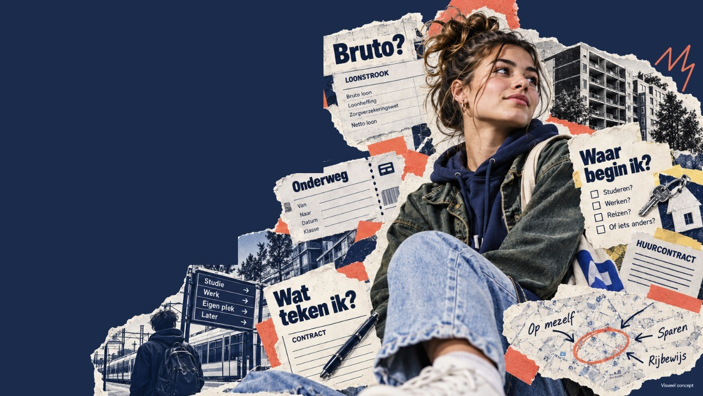

Jouw leven.
Jouw volgende
stap.
Leer begrijpen hoe het werkt
en wat jij kunt doen.

Dit is KlaarWijs
Het echte leven komt niet met een handleiding.
Een DigiD aanvragen. Een telefoonabonnement kiezen. Je eerste bijbaan en loonstrook begrijpen. Studiefinanciering regelen. Of voor het eerst een huurcontract ondertekenen.
Als je ouder wordt, krijg je steeds meer zaken zelf te regelen. Soms weet je niet waar je moet beginnen.
Daar is KlaarWijs voor.KlaarWijs helpt jongeren van 12 tot en met 24 jaar om steeds meer zelf te kunnen. Van een eerste keuze tot zaken die later op je pad komen.
Je krijgt duidelijke uitleg, herkent situaties uit je eigen leven en oefent met opdrachten. Zo leer je hoe iets werkt en wat je zelf kunt doen.
Want zelfstandig worden hoef je niet in één keer te kunnen.
Jouw volgende stappen
Jouw leven verandert. KlaarWijs groeit met je mee.
Je maakt steeds meer eigen keuzes. Bekijk welke onderwerpen je in verschillende fases van je leven kunt tegenkomen.
Zie deze route als richting. Jij bepaalt zelf wat bij je past.Mijn eerste stappen
Je ontdekt steeds meer zelf. Waar begin je en hoe maak je een goede keuze?
- DigiD
- Geld
- Online veiligheid
- Telefoonabonnement
Ik regel steeds meer
Je krijgt meer vrijheid en moet meer zelf regelen. Kijk eerst goed waar je ja tegen zegt.
- Eerste bijbaan
- Loonstrook
- Contracten
- Sparen
Er verandert veel
Je krijgt nieuwe keuzes en zaken om zelf te regelen. Kijk waar je op moet letten.
- Zorgverzekering
- Studiefinanciering
- Studiekeuzes
- Vaste lasten
Op eigen benen
Misschien ga je werken, verder leren of kies je een andere weg. Leer hoe je zaken zelf kunt regelen.
- Arbeidscontract
- Salaris
- Pensioen
- Werk en studie
Leren begrijpen, leren regelen.
Op het moment dat het bij jou past.